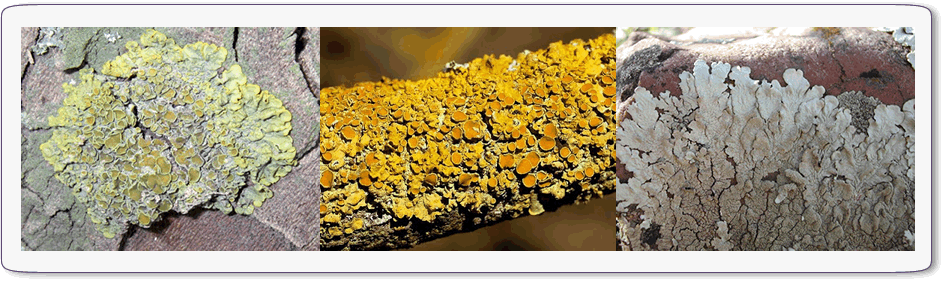
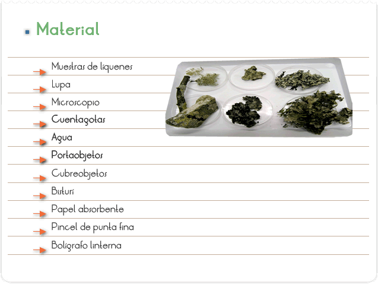
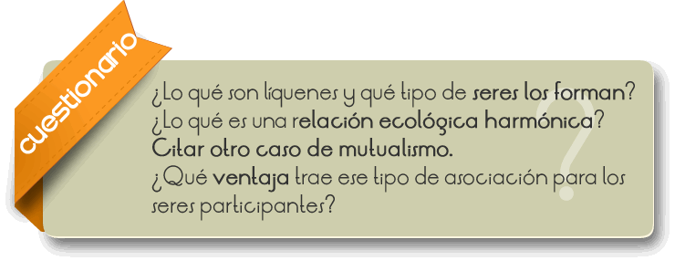

Los líquenes son seres vivos pertenecientes al Reino Vegetal, que por su pequeño tamaño y su extraña fisionomía pasan generalmente inadvertidos y a menudo son confundidos con otros grupos de vegetales.
Los líquenes son también conocidos como Micoficofitos y son una simbiosis entre un hongo (Mikes = hongo) y un alga (Phyton = planta), donde el alga (fotosintetizador) suministra los azúcares al hongo, y en compensación el hongo le proporciona agua y sustancias minerales disueltas. De esta forma, un liquen es una asociación estable y permanente capaz de mantenerse a sí misma. El crecimiento de los líquenes es extraordinariamente lento, jugando un papel muy importante en ecosistemas con condiciones ambientales extremas, como fijadores y productores de nitrógeno.
Los líquenes tienen un gran interés práctico y son utilizados para muy diversas finalidades. Los líquenes producen antibióticos que inhiben las bacterias Gram-positivas, mohos y virus. También han sido usados tradicionalmente como materia prima para la obtención de tintes naturales.
Los líquenes son una asociación de un hongo y un alga. Están tan íntimamente relacionados entre sí que se comportan y reproducen como una planta única e independiente. El hongo se encarga de proteger al alga de las radiaciones directas del solo y brindarle agua y sales minerales. El alga a su vez realiza fotosíntesis y proporciona al hongo alimento y vitaminas.

Identificar, a través de características externas, los líquenes y reconocer los integrantes de una relación ecológica- armónica del tipo mutualismo.

ACTIVIDAD I
1) Observar las muestras de líquenes con la lupa, en un local bien iluminado o con auxilio de la linterna, identificando su aspecto externo.
2) Gotear 1 gota de agua sobre dos puntos distintos del liquen, con auxilio del cuentagotas.
3) Observar lo que ocurre utilizando la lupa.
ACTIVIDAD II
1) Colocar una gota de agua en la lámina y reservar.
2) Raspar la superficie del liquen utilizando el bisturí o la hoja de afeitar, y depositar el material sobre la gota de agua en la lámina (si es necesario, use el pincel para retirar el material raspado del bisturí).
3) Cubrir el material con la laminita y, si hay exceso de agua, retirar tocando con el papel absorbente (filtro o higiénico) el borde de la laminita.
4) Analizar al microscopio en distintos aumentos.
5) Hacer un dibujo esquemático del material observado (aumento de 400X).

El reino Fungi es compuesto por seres vivos unicelulares o pluricelulares. Los hongos pluricelulares son formados por un conjunto de filamentos entrelazados, denominados micelio, cada filamento recibe el nombre de hifa. Generalmente son descomponedores y sus células poseen núcleo organizado. Dentro de sus representantes pueden ser citados: los hongos, mohos de ropa, comida, orejas-de-palo, levaduras (unicelulares), líquenes.
Los líquenes son asociaciones entre hongos, generalmente del tipo ascomicetos, y algas cianofíceas (algas azules) del reino Monera o algas verdes del reino Protista, siendo ambas unicelulares.
Son encontrados en locales bien diversos, como en ambientes desérticos fríos o de calor intenso. Son predominantes en las regiones polares (tundras), sirviendo de alimento para muchos mamíferos, como el reno y el caribú. Pueden ser encontrados sobre troncos de árboles, formando placas es verdeadas, rojas, amarilladas o azules, o también, formando filamentos que penden de los troncos, semejantes a “barba-de-viejo” (bromelias). Crecen sobre rocas desnudas, adonde liberan un ácido denominado liquenico, que las descomponen y facilitan su fijación. Como consecuencia, esos seres crean condiciones favorables para que otros colonicen estas rocas.
Aun siendo una asociación entre dos seres bastantes diversos, los líquenes presentan una estructura definida: la superficie (cortex) es formada por un micelio compacto y el interior es compuesto por dos camadas, una con gran cantidad de algas (Amada gonidial) y otra flojamente rellenada por células. Las hifas que penetran en el sustrato para fijar la estructura reciben el nombre de rizoides.
Los líquenes crecen lentamente y son bastantes sensibles a la polución atmosférica. Su presencia en determinado local es indicadora de la buena calidad del aire. Los líquenes liberan pequeños fragmentos, compuestos de hifas, envolviendo algas – los soredios, que son dispersados por el viento. Al caer, en local adecuado, pueden crecer y formar nuevos líquenes.
En el ambiente adonde se fijan los líquenes, el hongo y el alga, no pueden vivir aislados. En este caso, la asociación es benéfica para ambos. El hongo provee protección y absorbe rápidamente el agua del aire, del rocío o de la lluvia, abasteciéndola al alga, que de esa forma podrá hacer fotosíntesis. La glucosa producida por el alga es repartida con las hifas del hongo, que podrán seguir su crecimiento. Como en los locales donde hay líquenes la presencia de agua no es muy grande, quedaría muy difícil la supervivencia de las algas.
Ese tipo de asociación, en que por lo menos uno de los seres envuelto es beneficiado, se denomina relación harmónica. En el caso de lo líquenes, la asociación formada entre hongos y algas (especies distintas) se denomina relación harmónica interespecífica del tipo mutualismo (dos seres de especies distintas se benefician mutuamente de la asociación y no pueden vivir separados).
Otro ejemplo típico de mutualismo es presentado por la termita y un protozoario que vive en su intestino (responsable por la digestión de la celulosa, contenida en el alimento del animal, en glucosa) – la termita da abrigo y alimento y el protozoario transforma esa celulosa en glucosa, abasteciendo parte de esa glucosa a la termita. Eso es fundamental, pues la termita no posee enzimas para digerir la celulosa.
En el intestino humano, también, existen casos de mutualismo, adonde bacterias de la flora intestinal conviven harmoniosamente auxiliando en nuestra digestión y siendo favorecidas por el alimento que consumimos. Es un doble cambio.